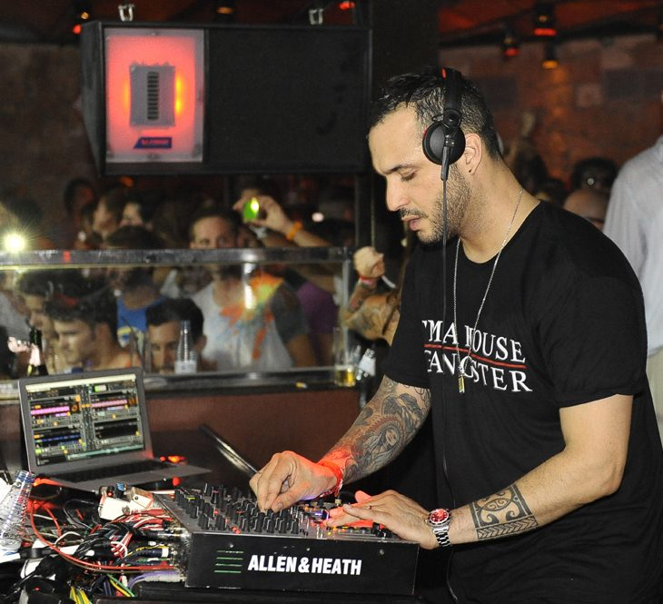

Loco Dice to Guetta: Ushuaia Ibiza reveals its 2013 stars



As details continue to emerge on the Ibiza 2013 shake-up, the island’s newest superclub Ushuaïa Beach Hotel has begun dropping its own bombs. Swedish House Mafia’s recent split has left an obvious gap in the schedule, while Luciano’s affiliation with the new Bomba club also casts doubt on his return.
However, the lavish beach club has snagged two high-profile headliners with David Guetta’s return and Avicii’s new residency, while Sasha and Loco Dice are also confirmed. Then came the announcement that Sebastian Ingrosso and Axwell will be taking over Wednesdays, sans fellow Mafioso Steve Angello, with the new Departures project.
First up, the club will be launching the season in little over a month with a rather spectacular-looking (and techno-heavy) launch party on May 25th, with Sven Vath, Luciano and Loco Dice set to headline alongside support from Maya Jane Coles, Joris Voorn and Reboot.
That’ll just be the start of the fun though, with the club confirming that David Guetta will return to the poolside from Monday 1st of July for the second consecutive year of his F**k Me I’m Famous residency. Meanwhile, they’ve replaced Swedish House Mafia with another Stockholm crowd-pleaser, as Avicii steps up for a Sunday residency from June 30th.
The other big ticket from Ushuaia so far is the announcement that Loco Dice will be setting up behind the decks on Thursday night for his new Used + Abused residency. Beyond a rather predictable Balearic video that’s hit the web, further details on what to expect are to be announced.
The final news is that while Sasha won’t be bringing his widely celebrated Never Say Never to the poolside in 2013. He will in fact be hosting a free Sunday party in the complex’s brand new ‘Ushuaia Tower’, an adjunct building that will offer an even more VIP (and presumably expensive) experience, as well as hosting a brand new high-tech clubbing space.
Sasha’s new project in ‘The Club’ will reportedly to take things a little deeper than would have otherwise been allowed in the main poolside area, with Ushuaia promising a solid roster of artists dedicated to “pushing new music with no rulebook and total creative freedom”.
Sasha expressed his enthusiasm for the change of scenery in a press release this week. “I love the fact these parties are free and taking place on Sunday daytime, bringing back a bit of the old island spirit of Sunday daytime raving. I’ve already been to see the new venue and made plans for who’s going to come down and join me to play. Some really inspiring music. Can’t wait to get started!”